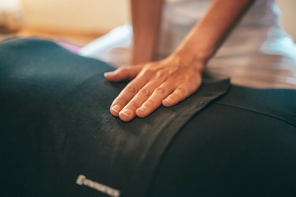

NOSOTROS
Rakis Rehabilitación Integral, es un consultorio especializado en la recuperación de dolencias y lesiones físicas.
Somos un equipo interdisciplinario de profesionales de la salud y el movimiento, enfocados en conservar y reestablecer el equilibrio del cuerpo.
Brindamos un plan integral basado principalmente en la osteopatía, kinesiología, preparación física y nutrición.
